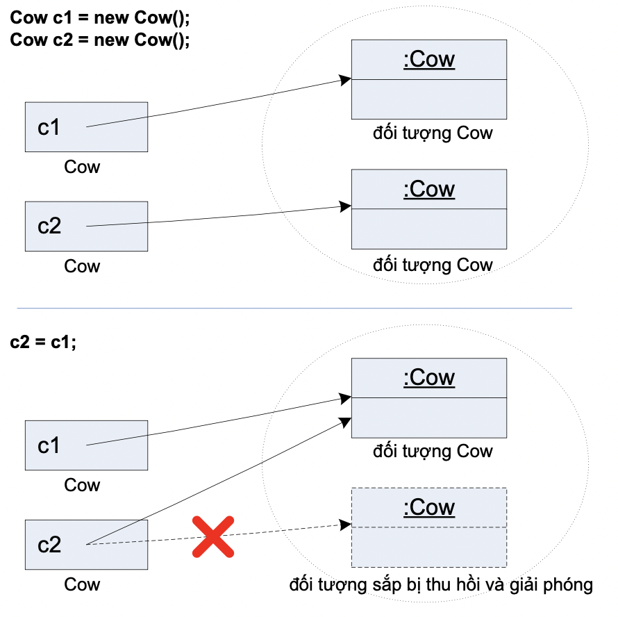

Biến kiểu cơ bản chỉ lưu các giá trị cơ bản. Vậy còn các đối tượng thì sao?
Thực ra, trong Java không có khái niệm biến đối tượng, mà chỉ có biến tham chiếu đối tượng. Một biến tham chiếu đối tượng lưu trữ các bit đại diện cho một cách truy nhập tới một đối tượng. Biến tham chiếu không lưu trữ chính đối tượng đó. Có thể nói rằng nó lưu cái gì đó giống như một con trỏ, hay địa chỉ của đối tượng trong bộ nhớ máy tính. Ta không biết chính xác giá trị đó là cái gì. Chỉ cần biết rằng giá trị đó đại diện cho một và chỉ một đối tượng, và rằng máy ảo Java biết cách dùng tham chiếu đó để truy nhập đối tượng.
Nói cách khác, về bản chất, các biến kiểu cơ bản hay các biến tham chiếu đều là các ô nhớ chứa đầy các bit 0 và 1. Sự phân biệt giữa hai loại biến này nằm ở ý nghĩa của các bit đó. Đối với một biến kiểu cơ bản, các bit của nó biểu diễn giá trị thực của biến. Còn các bit của biến tham chiếu biểu diễn cách truy nhập tới một đối tượng.
Nhớ lại ví dụ trong Hình 3.2, với các lệnh
Cow c = new Cow();
c.moo();
Ta có thể coi biến tham chiếu c như là một cái điều khiển từ xa của đối tượng bò được sinh ra từ lệnh new Cow(). Ta dùng cái điều khiển đó kèm với toán tử dấu chấm (.) để yêu cầu con bò rống lên một hồi (bấm nút "moo" của cái điều khiển từ xa để kích hoạt phương thức moo() của đối tượng).
Tương tự như vậy, ta lấy ví dụ:
String s1 = new String("Hello, ");
System.out.println(s1.length());
Ta có s1 là biến tham chiếu kiểu String. Nó được chiếu tới đối tượng kiểu String được tạo ra bởi biểu thức new String("Hello, "). Tại đây, đối tượng kiểu String vừa tạo không có tên, s1 không phải tên của nó mà là tham chiếu hiện đang chiếu tới đối tượng đó và là cách duy nhất để tương tác với nó. Ta gọi hàm length() của đối tượng đó để lấy độ dài của nó bằng cách dùng tham chiếu s1 trong biểu thức s1.length().
Nhấn mạnh, một biến tham chiếu đối tượng không phải là một đối tượng, nó chỉ đóng vai trò như một con trỏ tới một đối tượng nào đó. Tuy rằng, trong ngôn ngữ thông thường, ta hay dùng các cách nói như "Ta truyền đối tượng kiểu String s1 vào cho phương thức System.out.println()" hay "Ta tạo một đối tượng Cow mới với tên c ", s1 hay c không phải tên của các đối tượng đó, chúng chỉ là các tham chiếu. Thực chất, các đối tượng không có tên, chúng cũng không nằm trong biến nào. Trong Java, các đối tượng được tạo ra đều nằm trong bộ nhớ heap.
Hình 4.2 minh họa quan hệ giữa biến s và đối tượng kiểu String5 mà nó chiếu tới. Cụ thể, tại ví dụ đang xét, s và đối tượng nó chiếu tới nằm tại hai loại bộ nhớ khác nhau: đối tượng xâu "Hello" nằm trong heap, còn biến s nằm trong vùng bộ nhớ stack dành cho các biến địa phương của hàm main(). Sự khác biệt về vị trí của hai ô dữ liệu này dẫn đến độ dài cuộc đời của chúng. Một biến tham chiếu là biến địa phương của một hàm sẽ kết thúc sự tồn tại của mình sau khi hàm kết thúc. Còn đối tượng được tạo ra từ bên trong hàm đó vẫn tiếp tục tồn tại cho đến khi nào được máy ảo Java giải phóng – sau khi đối tượng đó không còn được dùng đến nữa.
Hình 4.2. Biến tham chiếu s và đối tượng kiểu String
Với dòng lệnh String s = new String("Hello"); như trong Hình 4.2, có ba bước khai báo, tạo và gán đối tượng và tham chiếu đối tượng. Bước 1, String s, khai báo một biến tham chiếu có kiểu cố định là String và được đặt tên là s. Bước 2, new String("Hello"), yêu cầu máy ảo Java cấp phát bộ nhớ cho một đối tượng String mới, đặt tại heap, với dữ liệu khởi tạo là xâu "Hello". Bước 3, =, là phép gán gắn biến tham chiếu s với đối tượng String vừa tạo, từ nay có thể dùng s làm một cái điều khiển từ xa đối với đối tượng đó.
Tham chiếu null là tham chiếu đang nhận giá trị null – không chiếu tới một đối tượng nào hết. Nếu chương trình truy nhập biến thực thể hoặc gọi phương thức từ một tham chiếu null, nghĩa là không có đối tượng nào để truy nhập các biến thực thể hoặc gọi phương thức của nó, khi thực thi đến lệnh đó, chương trình sẽ sập vì gặp lỗi NullPointerException (con trỏ null). Cần cẩn thận tránh lỗi này bằng cách kiểm tra tham chiếu null trước khi truy nhập đối tượng qua tham chiếu đó.
Đối với một đối tượng, lời gọi lệnh new như trong bước 2 là giai đoạn mở đầu. Trước khi ta có thể làm bất cứ việc gì đối với một đối tượng mới, nó phải được khởi tạo, nghĩa là các biến thực thể của nó phải được gán giá trị ban đầu. Khi ta dùng lệnh new, Java thực hiện tự động công việc này bằng cách gọi một phương thức đặc biệt được gọi là hàm khởi tạo (constructor). Phương thức này không trả về giá trị nào và có tên trùng với tên lớp. Một lớp có thể có nhiều hơn một hàm khởi tạo với danh sách tham số khác nhau. Trình biên dịch sẽ dựa vào danh sách đối số tại lời gọi new để gọi hàm khởi tạo tương ứng. Chi tiết về hàm khởi tạo được nói đến trong mục 9.2.
Đối tượng mới được tạo sẽ tồn tại trong bộ nhớ chừng nào ta còn có một tham chiếu nào đó chiếu tới nó. Khi một đối tượng không còn một tham chiếu nào chiếu tới, ta không có cách nào sử dụng đối tượng đó nữa. Ví dụ như trong Hình 4.3, sau khi ta chiếu biến c2 đến chỗ khác, ta mất hoàn toàn 'liên lạc' đối với với đối tượng Cow thứ hai. Nói cách khác, nó đã bị bỏ rơi và do đó sẽ được bộ phận dọn rác (garbage collector) của máy ảo Java thu hồi để tái sử dụng vùng bộ nhớ mà nó đã chiếm giữ. Chi tiết về nội dung này được nói đến trong Chương 9.
Hình 4.3. Đối tượng sẽ bị thu hồi khi không còn biến tham chiếu nào gắn với nó.